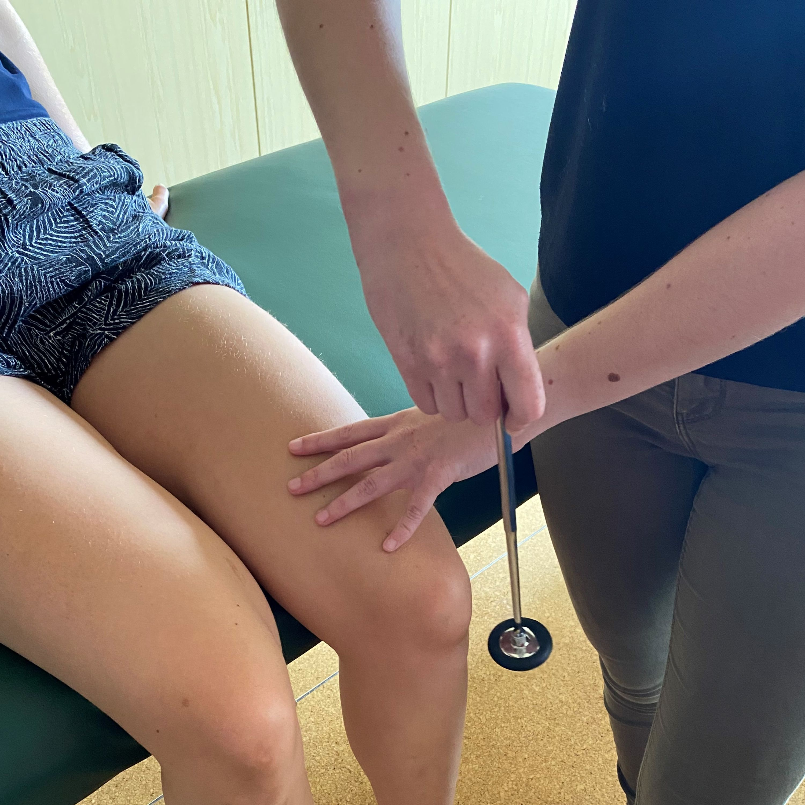

NEUROLOGISCHE REVALIDATIE



Bij neurologische aandoeningen denken we onder meer aan de ziekte van Parkinson, cerebrovasculair accident (CVA), multiple sclerose (MS), amyotrofe lateraalsclerose (ALS), myopathieën, maar ook dwarslaesie (para/tetraplegie) en duizeligheidsklachten vallen onder deze categorie.
Merk op dat dit geen limitatieve lijst is.
Het zenuwstelsel beschikt over de mogelijkheid om te herstellen of zich aan te passen. Tijdens de revalidatie maken we hier gebruik van en richten we ons op het behoud, herstel en/of verbeteren van het functioneren. Via verschillende therapievormen proberen we op deze manier de kwaliteit binnen het dagelijkse functioneren optimaal te houden.